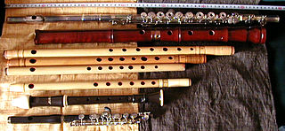

The flute is a family of musical instruments in the woodwind group. Unlike
woodwind instruments with reeds, a flute is an aerophone or reedless wind
instrument that produces its sound from the flow of air across an opening.
According to the instrument classification of Hornbostel–Sachs, flutes are
categorized as edge-blown aerophones.
A musician who plays the flute can be referred to as a flute player, flautist,
flutist or, less commonly, fluter or flutenist.
Flutes are the earliest extant musical instruments. A number of flutes dating to
about 43,000 to 35,000 years ago have been found in the Swabian Jura region of
present-day Germany.
These flutes demonstrate that a developed musical tradition
existed from the earliest period of modern human presence in Europe. Flutes,
including the famous Bansuri, have been an integral part of Indian classical
music since 1500 BC. A major deity of Hinduism, Krishna, has been associated
with the flute.

Etymology:
The word flute first entered the English language during the Middle English
period, as floute, or else flowte, flo(y)te, possibly from Old French flaute
and from Old Provençal flaüt, or else from Old French fleüte, flaüte, flahute
via Middle High German floite or Dutch fluit.
The English verb flout has the
same linguistic root, and the modern Dutch verb fluiten still shares the two
meanings.Attempts to trace the word back to the Latin flare (to blow, inflate)
have been pronounced "phonologically impossible" or "inadmissable".
The first
known use of the word flute was in the 14th century.According to the Oxford
English Dictionary, this was in Geoffrey Chaucer's The Hous of Fame, c.1380.
Today, a musician who plays any instrument in the flute family can be called a
flutist (pronounced "FLEW-tist", most common in the US), or flautist (pronounced
"FLAW-tist", most common in the UK), or simply a flute player (more
neutrally). Flutist dates back to at least 1603, the earliest quote cited by the
Oxford English Dictionary.
Flautist was used in 1860 by Nathaniel Hawthorne in
The Marble Faun, after being adopted during the 18th century from Italy
(flautista, itself from flauto), like many musical terms in England since the
Italian Renaissance. Other English terms, now virtually obsolete, are fluter
(15th–19th centuries) and flutenist (17th–18th centuries).
History:
The oldest flute ever discovered may be a fragment of the femur of a juvenile
cave bear, with two to four holes, found at Divje Babe in Slovenia and dated to
about 43,000 years ago.
However, this has been disputed. In 2008 another flute
dated back to at least 35,000 years ago was discovered in Hohle Fels cave near
Ulm, Germany.The five-holed flute has a V-shaped mouthpiece and is made from a
vulture wing bone.
The researchers involved in the discovery officially
published their findings in the journal Nature, in August 2009. The discovery
was also the oldest confirmed find of any musical instrument in history,
until a redating of flutes found in Geißenklösterle cave revealed them to be
even older with an age of 42,000 to 43,000 years.
The flute, one of several found, was found in the Hohle Fels cavern next to the
Venus of Hohle Fels and a short distance from the oldest known human
carving.
On announcing the discovery, scientists
suggested that the "finds demonstrate the presence of a well-established musical
tradition at the time when modern humans colonized Europe".Scientists have also
suggested that the discovery of the flute may help to explain "the probable
behavioural and cognitive gulf between" Neanderthals and early modern human.
A three-holed flute, 18.7 cm long, made from a mammoth tusk (from the
Geißenklösterle cave, near Ulm, in the southern German Swabian Alb and dated to
30,000 to 37,000 years ago) was discovered in 2004, and two flutes made from
swan bones excavated a decade earlier (from the same cave in Germany, dated to
circa 36,000 years ago) are among the oldest known musical instruments.
A playable 9,000-year-old Gudi (literally, "bone flute") was excavated from a
tomb in Jiahu along with 29 defunct twins,made from the wing bones of
red-crowned cranes with five to eight holes each, in the Central Chinese
province of Henan.
The earliest extant Chinese transverse flute is a chi flute
discovered in the Tomb of Marquis Yi of Zeng at the Suizhou site, Hubei
province, China. It dates from 433 BC, of the later Zhou Dynasty. It is
fashioned of lacquered bamboo with closed ends and has five stops that are at
the flute's side instead of the top. Chi flutes are mentioned in Shi Jing,
compiled and edited by Confucius, according to tradition.
The earliest written reference to a flute is from a Sumerian-language cuneiform
tablet dated to c. 2600–2700 BCE Flutes are also mentioned in a recently
translated tablet of the Epic of Gilgamesh, an epic poem whose development
spanned the period of approximately 2100–600 BCE.
Additionally, a set of
cuneiform tablets knows as the "musical texts" provide precise tuning
instructions for seven scale of a stringed instrument (assumed to be a
Babylonian lyre). One of those scales is named embūbum, which is an Akkadian
word for "flute".
The Bible, in Genesis 4:21, cites Jubal as being the "father of all those who
play the ugab and the kinnor". The former Hebrew term is believed by some to
refer to some wind instrument, or wind instruments in general, the latter to a
stringed instrument, or stringed instruments in general.
As such, Jubal is
regarded in the Judeo-Christian tradition as the inventor of the flute (a word
used in some translations of this biblical passage). Elsewhere in the Bible, the
flute is referred to as "chalil" (from the root word for "hollow"), in
particular in 1 Samuel 10:5, 1 Kings 1:40, Isaiah 5:12 and 30:29, and Jeremiah
Archeological digs in the Holy Land have discovered flutes from both the Bronze
Age (c. 4000-1200 BCE) and the Iron Age (1200-586 BCE), the latter era
"witness[ing] the creation of the Israelite kingdom and its separation into the
two kingdoms of Israel and Judea."
Some early flutes were made out of tibias (shin bones). The flute has also
always been an essential part of Indian culture and mythology, and the cross
flute believed by several accounts to originate in India as Indian literature
from 1500 BCE has made vague references to the cross flute.
Acoustics:
A flute produces sound when a stream of air directed across a hole in the
instrument creates a vibration of air at the hole.The air stream across this
hole creates a Bernoulli, or siphon. This excites the air contained in the
usually cylindrical resonant cavity within the flute.
The player changes the
pitch of the sound produced by opening and closing holes in the body of the
instrument, thus changing the effective length of the resonator and its
corresponding resonant frequency.
By varying the air pressure, a flute player
can also change the pitch of a note by causing the air in the flute to resonate
at a harmonic rather than the fundamental frequency without opening or closing
any holes.
Head joint geometry appears particularly critical to acoustic performance and
tone,[36] but there is no clear consensus on a particular shape amongst
manufacturers. Acoustic impedance of the embouchure hole appears the most
critical parameter.
Critical variables affecting this acoustic impedance
include: chimney length (hole between lip-plate and head tube), chimney
diameter, and radii or curvature of the ends of the chimney and any designed
restriction in the "throat" of the instrument, such as that in the Japanese
Nohkan Flute.
A study in which professional players were blindfolded could find no significant
differences between instruments made from a variety of different metals. In two
different sets of blind listening, no instrument was correctly identified in a
first listening, and in a second, only the silver instrument was identified.
The
study concluded that there was "no evidence that the wall material has any
appreciable effect on the sound color or dynamic range of the instrument".
Categories:
In its most basic form, a flute is an open tube which is blown into. After
focused study and training, players use controlled air-direction to create an
airstream in which the air is aimed downward into the tone hole of the flute's
headjoint.
There are several broad classes of flutes. With most flutes, the
musician blows directly across the edge of the mouthpiece, with 1/4 of their
bottom lip covering the embouchure hole.
However, some flutes, such as the
whistle, gemshorn, flageolet, recorder, tin whistle, tonette, fujara, and
ocarina have a duct that directs the air onto the edge (an arrangement that is
termed a "fipple").
These are known as fipple flutes. The fipple gives the
instrument a distinct timbre which is different from non-fipple flutes and makes
the instrument easier to play, but takes a degree of control away from the
musician.
Another division is between side-blown (or transverse) flutes, such as the
Western concert flute, piccolo, fife, dizi and bansuri; and end-blown flutes,
such as the ney, xiao, kaval, danso, shakuhachi, Anasazi flute and quena.
The
player of a side-blown flute uses a hole on the side of the tube to produce a
tone, instead of blowing on an end of the tube. End-blown flutes should not be
confused with fipple flutes such as the recorder, which are also played
vertically but have an internal duct to direct the air flow across the edge of
the tone hole.
Flutes may be open at one or both ends. The ocarina, xun, pan pipes, police
whistle, and bosun's whistle are closed-ended. Open-ended flutes such as the
concert flute and the recorder have more harmonics, and thus more flexibility
for the player, and brighter timbres. An organ pipe may be either open or
closed, depending on the sound desired.
Flutes may have any number of pipes or tubes, though one is the most common
number. Flutes with multiple resonators may be played one resonator at a time
(as is typical with pan pipes) or more than one at a time (as is typical with
double flutes).
Flutes can be played with several different air sources. Conventional flutes are
blown with the mouth, although some cultures use nose flutes. The flue pipes of
organs, which are acoustically similar to duct flutes, are blown by bellows or
fans.
Western transverse flutes:
Wooden one-keyed transverse flute:
Usually in D, wooden transverse flutes were played in European classical music
mainly in the period from the early 18th century to the early 19th century.
As
such the instrument is often indicated as baroque flute. Gradually marginalized
by the Western concert flute in the 19th century, baroque flutes were again
played from the late 20th century as part of the historically informed
performance practice.
Western concert flute:
The Western concert flute, a descendant of the medieval German flute, is a
transverse treble flute that is closed at the top. An embouchure hole is
positioned near the top, across and into which the player blows.
The flute has
circular tone holes, larger than the finger holes of its baroque predecessors.
The size and placement of tone holes, the key mechanism, and the fingering
system used to produce the notes in the flute's range were evolved from 1832 to
1847 by Theobald Boehm, and greatly improved the instrument's dynamic range and
intonation over those of its predecessors.
With some refinements (and the rare
exception of the Kingma system and other custom adapted fingering systems),
Western concert flutes typically conform to Boehm's design, known as the Boehm
system. Beginner's flutes are normally made of nickel, silver or brass that is
silver-plated, while professionals use solid silver, gold, and sometimes
platinum instruments. There are also modern wooden bodies instruments usually
with silver or gold keywork. The wood is usually African Blackwood.
The standard concert flute is pitched in the key of C and has a range of three
octaves starting from middle C (or one half-step lower, when a B foot is
attached to the instrument). This means that the concert flute is one of the
highest common orchestra and concert band instruments.